HydroPED Simulation program was originally developed by Vladimir Lyakhovsky Eyal Shalev from the Geological Survey of Israel. The program performs modeling of hydraulic stimulation by welbore fluid injection. It combines physical aspects of rock mechanics and fluid diffusion. Currently, there is an ongoing efforts to make the hydrology component more efficiently, and to integrate a new component to the model which will add the aspects of heat advection.
Hydro-PED is built out of two wings which calculates the cross-effects between the rock and the fluids. The part of rock mechanics was developed mainly by Vladimir. This code is based on his former researches which enabled the development of the commercial application called FLAC (Fast Lagrangian Analysis of Continuous). The hydrology part was developed by Eyal. It calculates diffusion using the Finite Elements Method, which translates the problem to linear equation of type Ax=b where A is a sparse positive symmetric matrix, b is a known vector, and x is the variables vector. The two wings of the program, are calculated over the same grid but their timesteps may be varied. The mechanics of the rock causes changes in the structure of the rock, which in turn changes the velocity of the reservoir, which influences the fluid's stress and flow, which changes the forces that work over the rock and so on and so forth. Another part of the model, which is currently in development, is the heat model.
The dominant approach when integrating various physical modules, is to make some iterations for every timestep, which enables us to iteratively make the solution more accurate. For instance, we can set a wanted accuracy level of fluid's density 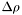 and make all the calculations, in all program's modules, over and over until at some iteration 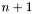 we will achieve 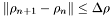. In Hydro-PED we assume that because the timesteps were calculated such that the cahnge in physical parameters will be minimal, as will be explained later, we can neglect the iterative improvement. The new values of the physical parameters will spread to the next timestep.
The mechanical component of the program solves directly the equations of rock mechanincs in a direct and extremely efficient method. The timestep is adaptive and sometimes it can be in the resolution of a microsecond.
The timestep is calculated as follows. We set the balance of the system as 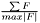 where 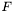 is the forces in the system. As much as the sum of the forces is smaller, the system is more balanced. Whenever the balance is smaller than a pre-defined value, the timestep will be increased by some factor, and vice-versa, when the balance is bigger than some other value, which is referred as "off-balance" (boff), the timestep will be decreased by the same factor. In geological systems, there are no drastic changes without any continuous progress, which is why there is no need to dramatically change the value of the timestep, and an adaptive approach is more appropriate. The values of the off-balance and the increase (respectively decrease) factor can be determined only by a trial and error process, according to the material which the system is made of. However, In a case where the rock is broke up, the timestep will jump down to the minimum value, as will be described later.
The module is representing the system's space using tetrahedrons where each one is referred as an "element" every vertex of the tetrahedron is referred as a "node". Some of the physical calculations are performed over an element, and some of them over a node. There are reciprocal relations between an element and his corresponding nodes. For example, the total mass of an element is divided equally to four such that it contributes quarter of element's mass to each node's mass. Each node is shared between four elements, so node's total mass is the average masses of all his corresponding elements.
Stress creates strain. The strain is reflected by changing the place of the nodes of the different elements. This change creates deformation of the elements. In general, the calculation of the strain is performed by a three-dimensional velocity vector which set the place of the nodes after the strain. This velocity is determined by a combination of the force over the node and a damper which creates an opposite force and tend to balance the system (just like friction). The sum of the forces which influences a node, 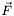, combined with Frequency Independent Damping force which is determined by a preconditioner 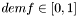 which produces the net force 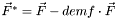. The velocity of each node is then calculated 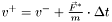. Now, using the calculated velcity, the coordinates of each node are re-calculated.
In one dimensional space, the strain of a 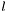-long spring, which becomes 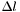 is calculated by 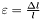. In three-dimensional space, the strain is represented by a tensor:
![\[ \begin{bmatrix} \varepsilon_{xx} & \varepsilon_{xy} & \varepsilon_{xz} \\ \varepsilon_{yx} & \varepsilon_{yy} & \varepsilon_{yz} \\ \varepsilon_{dx} & \varepsilon_{dy} & \varepsilon_{dz} \end{bmatrix} = \begin{bmatrix} \frac{\partial{u_x}}{\partial{x}} & \frac{1}{2}\left(\frac{\partial{u_x}}{\partial{y}} + \frac{\partial{u_y}}{\partial{x}}\right) & \frac{1}{2}\left(\frac{\partial{u_x}}{\partial{z}} + \frac{\partial{u_z}}{\partial{x}}\right) \\ \frac{1}{2}\left(\frac{\partial{u_y}}{\partial{x}} + \frac{\partial{u_x}}{\partial{y}}\right) & \frac{\partial{u_y}}{\partial{y}} & \frac{1}{2}\left(\frac{\partial{u_y}}{\partial{z}} + \frac{\partial{u_z}}{\partial{y}}\right) \\ \frac{1}{2}\left(\frac{\partial{u_z}}{\partial{x}} + \frac{\partial{u_x}}{\partial{z}}\right) & \frac{1}{2}\left(\frac{\partial{u_z}}{\partial{y}} + \frac{\partial{u_y}}{\partial{z}}\right) & \frac{\partial{u_z}}{\partial{z}} \end{bmatrix} \]](form_36.png)
The elements in the main diagonal are called Volumetric (or Bulk) Modulus. The rest of the elements are called Shear Modulus.
Based on the strain, we use Hooke's law to calculate the force over the body. In one-dimensional space, Hooke's law states that 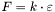. In three-dimensional space, Hooke's law sets up a linear function 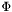 such that 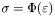.
At that point, the damage mechanics field of research is getting involved. When a rock is being stressed up, it starts to create more and more fatigue, micro-cracks, which getting bigger as much as the stress keep being applied or gets stronger. The amount of damage is noted as 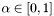 where 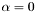 means an ideal material, without any fatigue, and 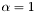 means a break up of the rock. The updated Hooke's law is considering the damage of the rock so now 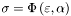. The next step is to calculate the force over each face. For a given normal vector 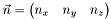 the force will be
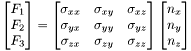
From the calculation decribed above we get the following data flow: stress creates strain, which in turn effects the stress and so on and so forth. Another factor in this process is the evaluation of the state of the material. Whenever the rock is breaking up, the strain will continue to deform the elements even without any force investment. From that point on the finite elemnts method is not usable anymore because the computation will not converge. FLAC method, however, will work as usual.
Whenever a break-up event has occured, the process performs actions in order to put the system in a balanced state once again. These actions, which defines a healing process, are coded in the "drop" subroutine. In the case of a well, the healing process is performed by fluids which seeps between the cracks, which decrease the stress inside the well and the gravity force is repairing the rock.
Sometimes, parts of the strain are irrevrsible. As in the case of heated plasticine clay. This strain is referred as irrevrsible strain or plastic strain. When we calculate the force using Hooke's law, we should consider only the reversible (elastic) part of the strain. In general we can state that 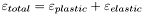.
Whereas mechanics chages in the rock occure sometimes in a frequent manner, fluids changes are relatively less frequent. For this reason, the hydrology timestep is never less than 10 seconds. However, when the system is in such blalanced state that the mechanics timestep is bigger than 10 seconds, the hydrology timestep will get his value from the mechanics timestep. The same goes to the heat module. In this way, the hydrology and head modules have an implicit adaptive timestep.
The hydrology module solves the differential equation:
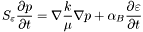
The equations are being solved by finite elements method such that we should find vector 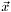 which represents the stress in the rock at the next timestep based on matrix which represents the state of the rock in terms of permeability and strain, and vector which represents the stress at the current timestep. We get the linear algebra equation: 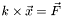.
First of all, we calculate matrix 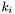 and vector 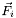 for each element 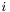 using the "tetra" subroutine. each matrix is of size 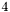 because it represents teh relations between element's nodes. Then, the program build the overall matrix and vector such that each row and column represents specific node.
From the description above it is easy to figure out that matrix is extremely sparse because every node has relations with at most another 12 nodes. Additionally, the matrix is symmetric because the diffusion effect is symmetric for each pair of nodes. The combination of these two characteristics points out that itertive solution methods should be very effective.
The solution of the hydrology equations 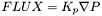 leads to a sparse, positive, symmetric matrix. The solution of heat transfer equations leads to a sparse matrix, but asymmetric one. The cause to this difference is the fact that in the aspect of heat there are two components. The first component, diffusion is common to both heat and hydrology. The second component is heat advection where materials with mass performs tarnsition of heat on themselves. This component is moving in a specific direction and so effects the structure of the matrix asymmetrically. The equations the module should solve have the form of 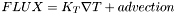.
As mentioned above, the timestep of the heat module is the smae as the hydrology timestep.
The temperature is calculated by the equation:
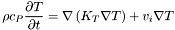
Where stands for fluid's density, 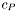 is the heat capacity, 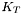 is heat preconditioner. The density of the fluid is influenced by fluid's pressure which is calculated by:
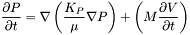
Where 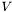 is the volume, 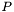 is the pressure, 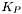 is the permeability of the material and is its viscosity.
As we mentioned, the heat module is currently under development.
 1.6.1
1.6.1